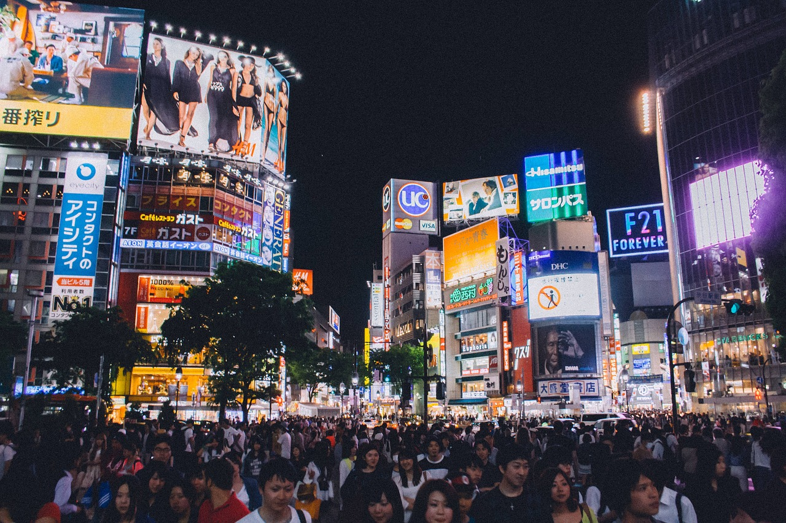
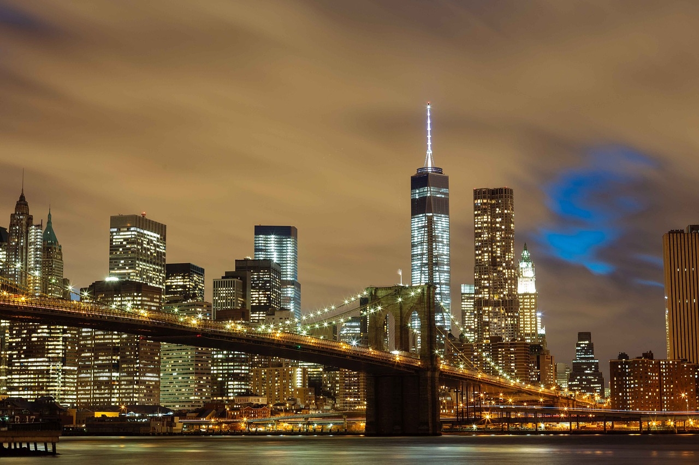

Paris, France

Source: Eiffel Tower France Paris Landscape
Paris is one of the most iconic travel destinations, known for its art, history, and incredible food.
A must-see attraction is the Eiffel Tower, but don't forget to explore the charming streets of Montmartre
and visit the Louvre to see the Mona Lisa.
- Hidden Gem: Visit Rue Crémieux, a colorful, lesser-known street perfect for photography.
- Local Tip: Avoid long lines at the Eiffel Tower by visiting early in the morning or late in the evening.
- Best Time to Visit: April - June (spring) or September - October (fall).
Tokyo, Japan

Source: Shibuya Crossing Tokyo Japan Asia
Tokyo is a blend of traditional culture and futuristic innovation. Visit the historic Senso-ji Temple,
explore the busy streets of Shibuya, and experience authentic sushi at the Tsukiji Outer Market.
Must-Try Food:
- Ramen: Ichiran Ramen is a great place to start.
- Sushi: Visit a conveyor belt sushi restaurant for an affordable experience.
- Street Snacks: Try Taiyaki (fish-shaped cake with sweet filling).

Source: Sushi Menu Restaurant Food Kitchen
New York City, USA

Source: Buildings Bridge Illuminated
The city that never sleeps offers something for everyone. Walk through Central Park, visit Times Square,
and take in breathtaking skyline views from the top of the Empire State Building.
My Favorite NYC Experiences:
- Taking the Staten Island Ferry for free views of the Statue of Liberty.
- Exploring the food markets like Smorgasburg in Brooklyn.
- Watching the sunset from the Brooklyn Bridge.